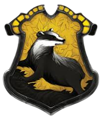

História
Lufa-Lufa é uma das quatro casas da Escola de Magia e Bruxaria de Hogwarts, fundada por Helga Hufflepuff. A casa valoriza a bondade, a lealdade, a paciência e a justiça. A entrada para a Sala Comunal de Lufa-Lufa está localizada atrás de uma pilha de barris de cerveja, acessada por meio de uma senha específica.
Características e Princípios
Bondade e Lealdade
Lufa-Lufa valoriza a bondade para com os outros e a lealdade aos amigos. Os membros da casa são conhecidos por sua disposição de ajudar e apoiar uns aos outros.
Paciência
A paciência é uma característica fundamental da casa. Lufa-Lufa incentiva seus membros a serem tolerantes e compreensivos, aceitando as diferenças dos outros.
Trabalho Duro
Lufa-Lufa valoriza o trabalho árduo e a dedicação. Os lufanos muitas vezes alcançam o sucesso através da persistência e esforço constante.
Justiça
Assim como Corvinal, Lufa-Lufa preza pela justiça e pela imparcialidade. Os membros da casa buscam tomar decisões éticas e equitativas.